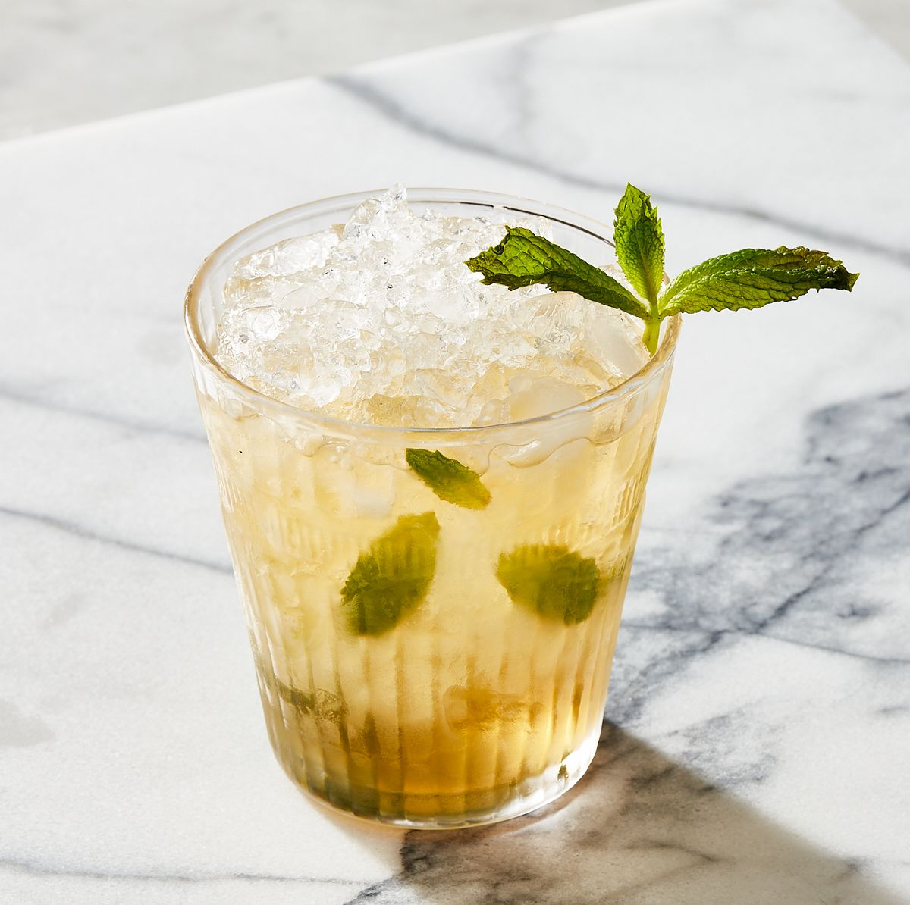

There was never a shortage of alcohol at the numerous parties in The Great Gatsby , even though these were the times of American Prohibition. One of Daisy's favorite drinks was the Mint julep. It's a traditional cocktail from the American South, probably Virginia. This drink is traditionally served during the Kentucky Derby, with approximately 80,000 drinks served over the two days of racing.